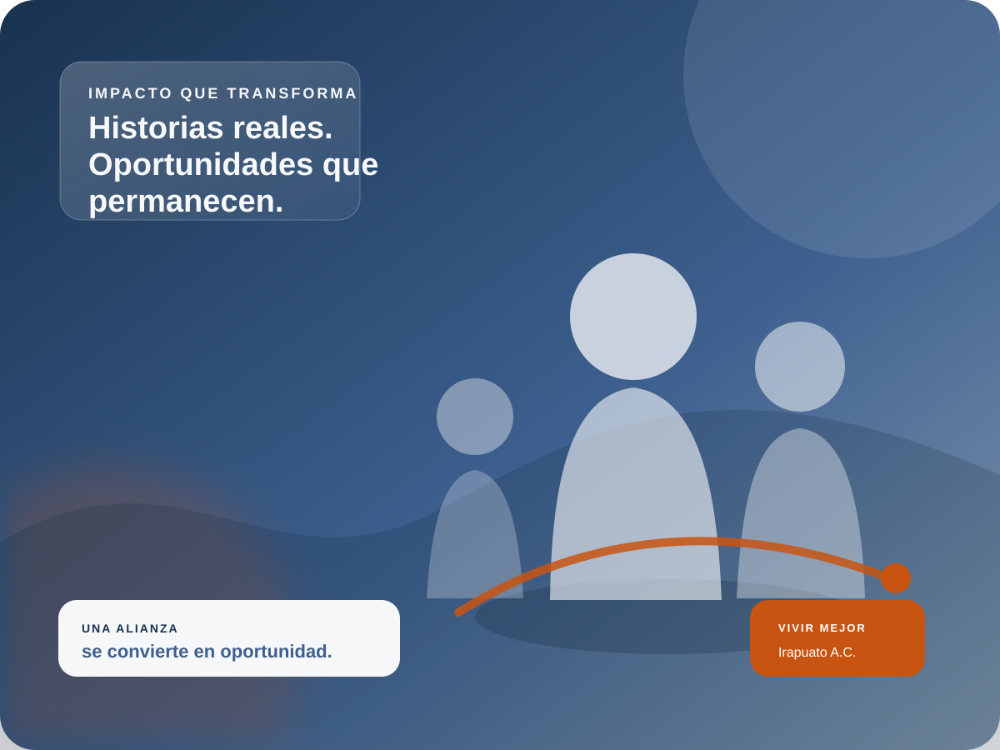
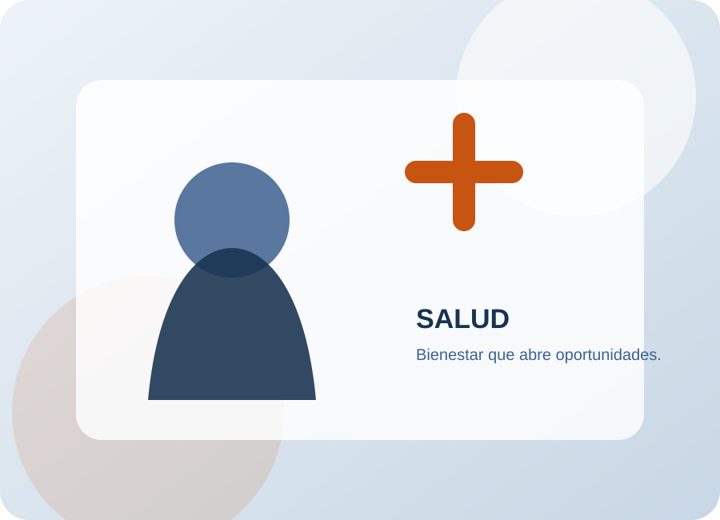
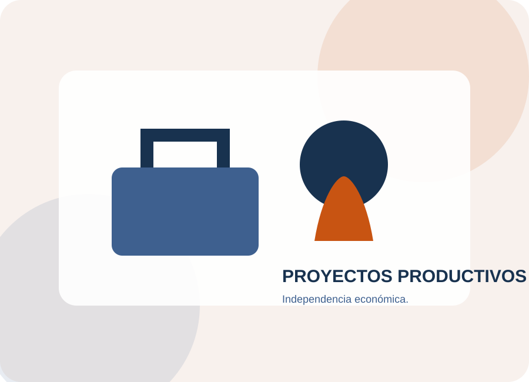
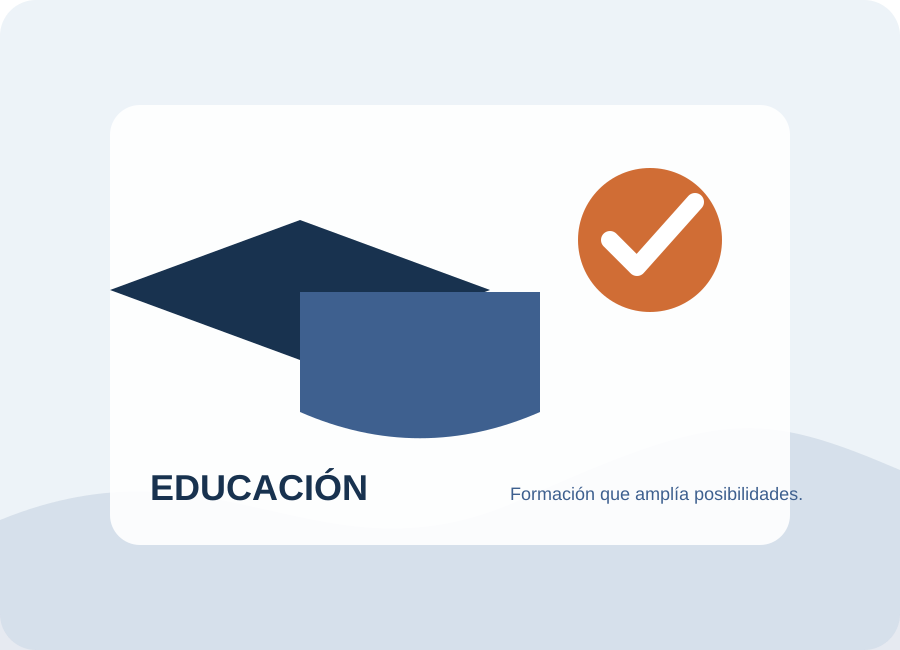
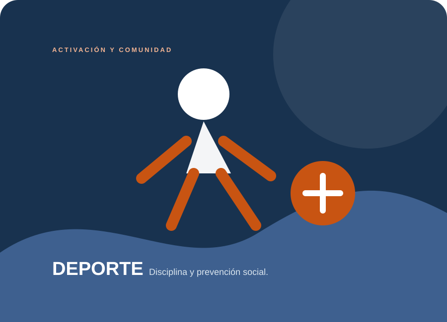

Transformamos vidas a través de oportunidades.
Creamos oportunidades para las personas y conectamos empresas, instituciones y aliados estratégicos con proyectos que generan bienestar e impacto social.

El impacto detrás de cada alianza
Cada alianza se convierte en resultados medibles.
Recursos que se convierten en acceso, prevención y atención para más personas.
Conoce nuestro impacto →Nuestro trabajo se construye desde cuatro pilares.
Trabajamos desde distintas áreas para responder a necesidades sociales y generar oportunidades de desarrollo.

Recuperación de la autonomía física.
Acciones de prevención y atención que buscan ampliar oportunidades de bienestar.
Explorar →
Fortalecimiento para la independencia económica.
Herramientas, formación y acompañamiento para fortalecer modelos productivos.
Explorar →
Formación académica y humana.
Capacitación y desarrollo de competencias para ampliar oportunidades.
Explorar →
Disciplina y prevención social.
Activación física y alianzas que acercan el deporte a la comunidad.
Explorar →¿Y si tu colaboración pudiera convertirse en algo más?
En Vivir Mejor entendemos la colaboración como una inversión social: recursos que se convierten en acciones, oportunidades y resultados que pueden medirse.
Tu recurso no termina cuando llega. Empieza cuando se convierte en una oportunidad.
Conocer opciones para mi empresaLas cifras muestran el alcance. Las historias muestran lo que ese impacto significa para una persona.
Ver historias y documentales →Detrás de cada resultado hay una persona.
Una oportunidad puede cambiar el rumbo de una historia. Por eso documentamos experiencias, resultados y aprendizajes.
“Detrás de cada cifra hay una historia, una oportunidad y un futuro distinto.”
Impacto que también se puede comprobar.
La confianza se construye con procesos, transparencia y mejora continua.
Conoce nuestra institucionalidad →Lo que está pasando en Vivir Mejor
Eventos, publicaciones y conversaciones para mantener a nuestros aliados cerca del impacto.
Participa en nuestras próximas actividades.
Consulta eventos, convocatorias y actividades.
Ver eventos →PUBLICACIONESInformes y newsletters.
Consulta los documentos institucionales y reportes de impacto.
Ver publicaciones →PODCASTConversaciones que generan ideas.
Contenido audiovisual acompañado de transcripciones.
Escuchar →Elige cuánto quieres aportar.
Selecciona un monto y pasa directamente al último paso para completar tus datos.